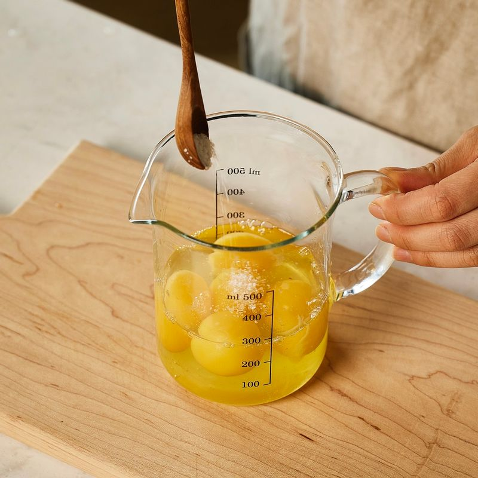
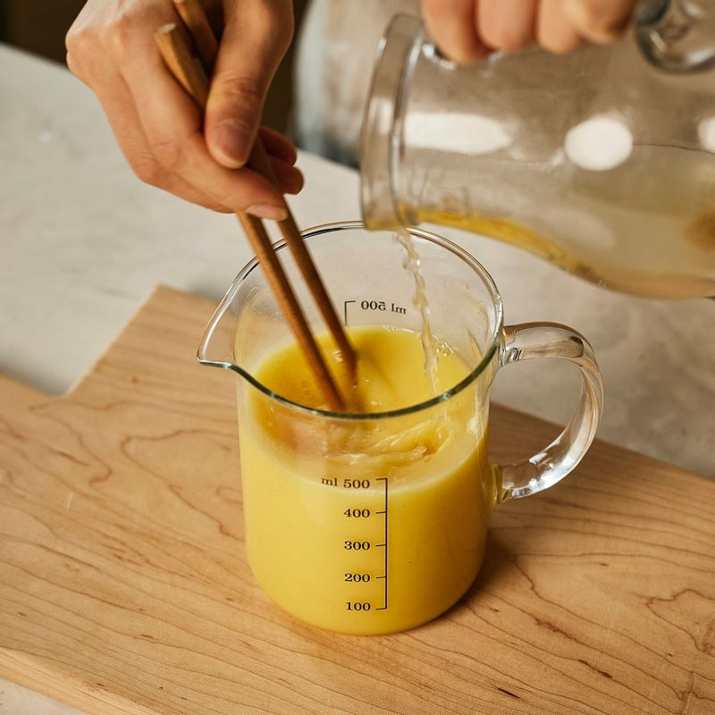
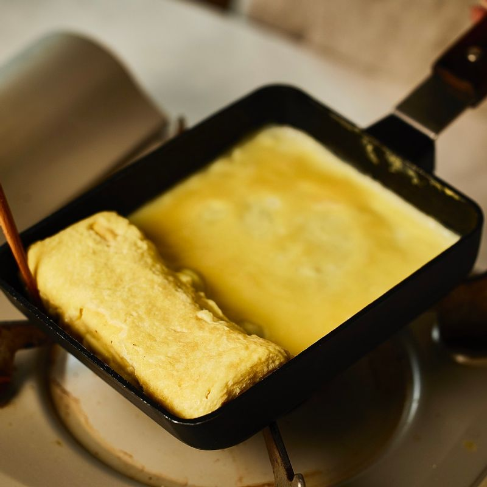
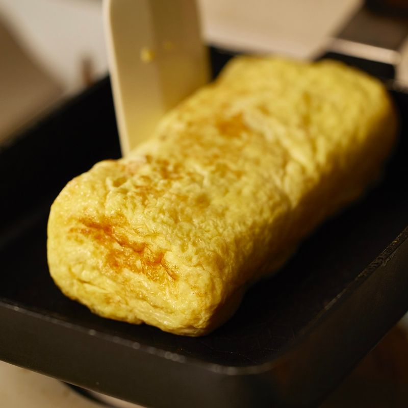
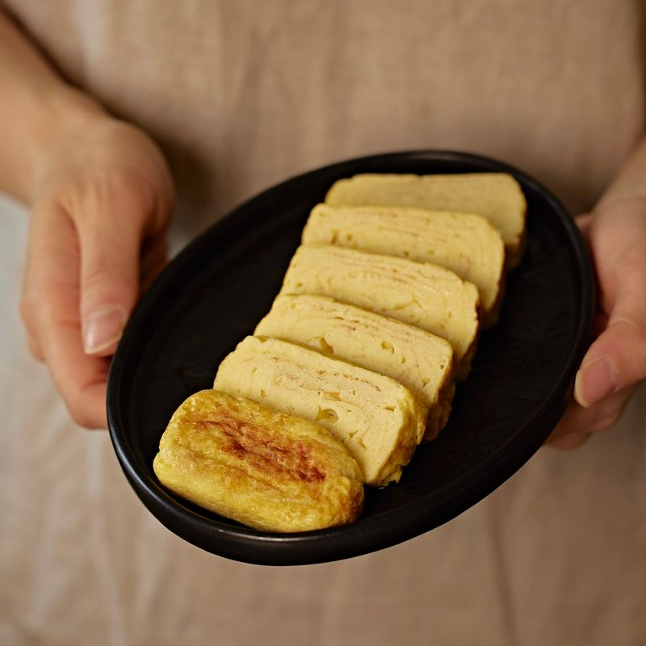

-

볼에 달걀을 넣고 풀어준 후 맛술과 소금을 넣어 섞어주세요.
-

따뜻한 물에 코인 육수 한 알을 넣어 녹인 후 만들어둔 달갈물에 조금씩 부어가며 섞어주세요.
-

중약불로 달군 팬에 약간의 식용유를 두르고 달걀물을 붓고 윗면이 반쯤 익으면 돌돌 말아주세요.
-

말아진 달걀을 팬 머리쪽으로 밀어 놓고 달걀물을 붓고 3회 정도 같은 방법으로 반복해서 말아주세요.
-

완성된 달걀 말이는 한 김 식혀 먹기 좋게 썰어 맛있게 즐겨주세요.